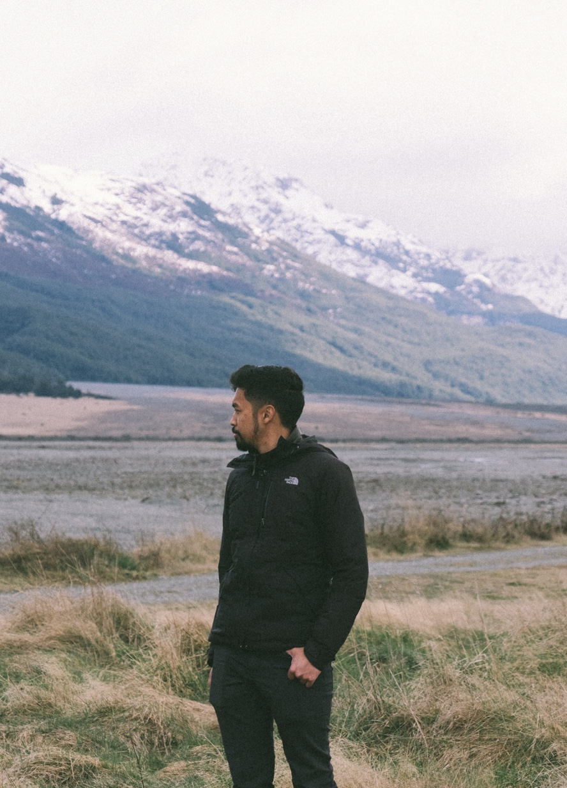

John Ranola

Hey there, I’m a product designer born, raised and currently living in Sydney, Australia. Right now, I’m helping to create better digital experiences for small business customers of Australia’s biggest bank.
I believe shipping great experiences needs a few things: a drive to build what’s right for users, influence and rapport with key decision makers and good collaboration with the cross-disciplinary teams that build them.
Prior to working in design, I was a front-end engineer using technologies such as Less, Sass and Angular.
When I’m not designin’, you’ll most likely catch me hiking, playing volleyball or learning how to ice skate.
Employment History
-
Experience Designer
Commonwealth Bank of Australia, Sydney
2014 - Present -
Software Engineer
Commonwealth Bank of Australia, Sydney
2013 - 2014 -
Developer
ServiceRocket, Sydney
2010 - 2012